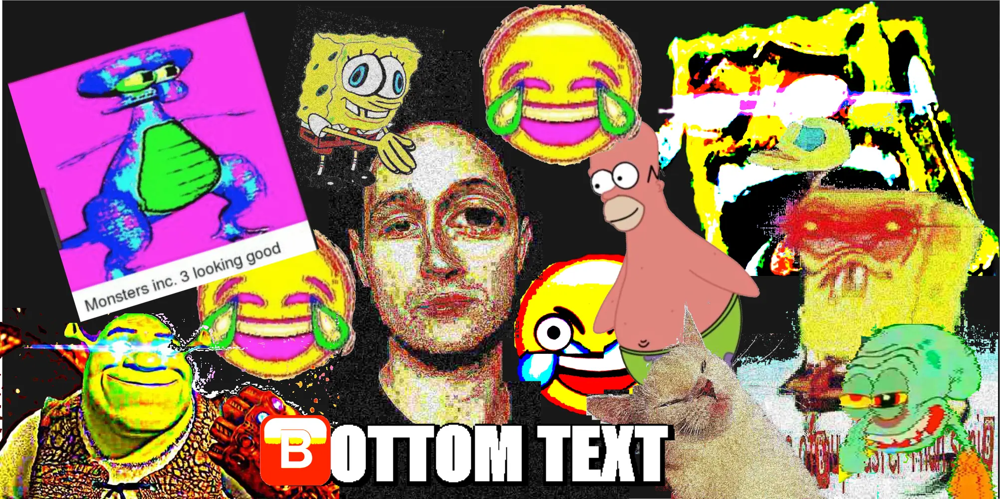
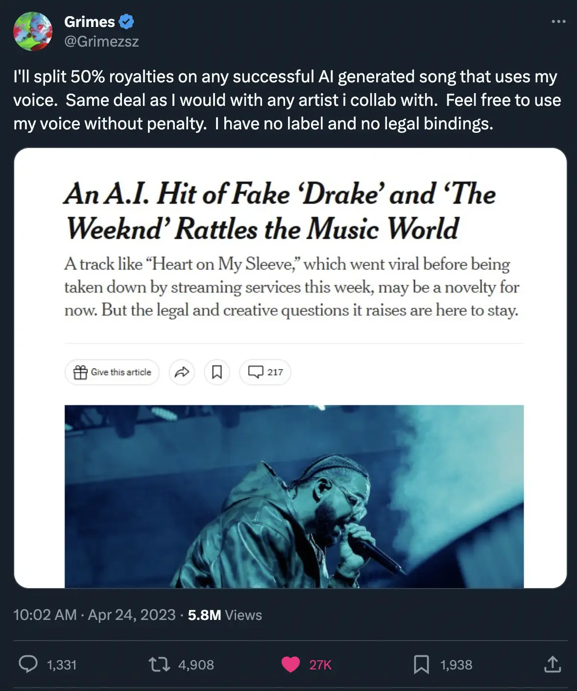

★ ✦ ✪ ✡ ✵ ✫ ✱ ✰ ★ ✦ ✪ ✡ ✵ ✫ ✱ ✰ ★ ✦ ✪ ✡ ✵ ✫ ✱ ✰ ★ ✦ ✪ ✡ ✵ ✫ ✱ ✰ ★ ✦ ✪ ✡ ✵ ✫ ✱ ✰ ★ ✦ ✪ ✡ ✵ ✫ ✱ ✰ ★ ✦ ✪ ✡
DISCLAIMER: 99% OF THIS WEBSITE WAS BROUGHT TO YOU BY GPT AND COPILOT. WHY WOULD I DO THIS MYSELF?
★ ✦ ✪ ✡ ✵ ✫ ✱ ✰ ★ ✦ ✪ ✡ ✵ ✫ ✱ ✰ ★ ✦ ✪ ✡ ✵ ✫ ✱ ✰ ★ ✦ ✪ ✡ ✵ ✫ ✱ ✰ ★ ✦ ✪ ✡ ✵ ✫ ✱ ✰ ★ ✦ ✪ ✡ ✵ ✫ ✱ ✰ ★ ✦ ✪ ✡
Fold
This is more of a blog post than anything, a journal entry if you like, it is a heterogeneous collection of anecdotes and thoughts which I have noted over the past few months about the nature of digital life. A lot of the time I feel this is glossed over by my generation, since we have always known the internet to be. It is everywhere, and our lives are multi-modal now, we no longer live in just the physical. Perhaps you could say that previously, before the internet, and computers even, humans lived also in the written. But the written is anachronistically one-dimensional compared to the digital. The digital is multi-dimensional, and its dimensionality is increasing exponentially.
Anyways, reflection is healthy, and it allows me to improve aspects of my life. So let this be a reflection on my experience of digital life. It may seem odd, and I want to emphasise this is not something I consciously think about a lot; it is really in this reflection where I have collected my thoughts into writing, for nothing more than the fact I enjoy doing it.
Online Presence
Before moving to Tokyo, I never posted online. My Instagram was private and I hadn't ever posted my face even. Never posted stories either. For me this was fine, since I had a tight circle of friends, and I shared more of my daily life and thoughts with them through DMs. I also never really considered the idea of posting photos, because I didn't feel any inherent need to share my life with other people I was not super close with.
If I met someone new, I'd occasionally take their contact, but most likely they wouldn't see me again until we next met in person. Now here in Tokyo, it seems if you have any decent conversation with someone you almost always exchange Instagram.
Eventually you end up with a wide online network of people you have met. Maybe it's also in the foreigner circle I am around, many people are in unique lines of work and networking is a key component of their work. For me, I don't need to network, but it's still nice.
Parasocial relationships
I first heard about this term when reading about how Twitch streamers have an unhealthy community, since their fans enter into a one-sided relationship with the streamer. They become obsessed and emotionally attached, then end up donating half their bank account to Pokimane in the hopes she whispers their name.
It's a pretty incel thing to do, but I also see fragments of it in normal Instagram use. In fact, I first noticed it on Twitter, where I follow a lot of anonymous accounts. The accounts I felt more affinity towards were the ones that shared more about their personal life. See, humans are gregarious beings and it's a very natural thing to enjoy listening to how other people feel. But I hadn't even met these people, let alone know their real name or what they look like, and I still found their posts interesting.
Like I said, normal Instagram facilitates this too - through stories mainly. The people that post their daily life constantly, spamming stories everyday, it's natural to feel like you know them better - because, well, you do. You know more about them. Me personally, I don't enjoy sharing my daily life to everyone, but sometimes I'll share something interesting I read or discover, not for any gain to myself, but just because I enjoy sharing - it's natural. This is all generalised of course, people post stories for other purposes such as business or advice, or one that I use sometimes is sharing an event I am going to. But sharing things online can often be very one-sided - most people I follow I'm not close with, maybe I view their story, but there'll be no interaction on my behalf. This is a lower form of a parasocial relationship.
Whether it's a good thing or a bad thing - online presence makes a difference in how people view you, and how they feel fondness towards you. You should bear this in mind when you think about posting media online.
I realised this a few months before moving to Tokyo, and not long after I moved here I went public on Instagram, not that it means much, but it was a small difference to me that felt significant.
Building a brand
Another thing I realised recently is everyone's personality can be viewed as a personal brand. Sure, there's no commercial aspect to most people's brand, but that's not how I am using the word 'brand'. Everyone is unique, has a unique subset of interests, unique lexicon, skills, personality, etc.
How you post online is a huge part, perhaps even the majority, of a person's personal brand. For many people that follow you, on any given day, it is probably more likely that they see you online than in-person. This is pretty significant.
That is to say, people's opinions of you are often curated more from your online presence than your physical presence.
A counterpoint I have heard is that physical presence leaves a greater impression than online presence. I generally agree with this. It's case-dependent too though.
You can choose not to care what other people think; or never post online - this is fine. But reminding people that you exist matters too. I appreciate seeing how my friends from school are going, even if some I haven't talked to much since.
Many people I see here in Tokyo also find a way to monetise their own personal brand. Usually it's either they sell a product, or they do some freelance work, and their Instagram is as much a business profile as it is a social profile. A business-social profile with the guise of an entirely social profile perhaps.
So to summarise this section, sharing interests is a valuable part of digital life, because it affects how other people feel towards you, in one way or another.
Digital Tone of Voice
Another thing I thought about in writing this is what I would label 'digital tone of voice'. Everyone speaks differently irl, and the same goes for how you speak online. Irl vs digital tone of voice are not necessarily connected either, quiet people can shout over text, loud people can be dry.
Use of slang, abbreviations, emojis, are all part of the digital tone of voice, but some of these even infiltrate irl life too - case in point with 'irl'. Everyone curates their own unique digital tone of voice based on their digital experiences and their physical experiences. To me this is very interesting.
Referring back to my earlier point - digital presence is equally significant as real life presence with respect to tone of voice too. How you talk over text and in writing is a part of your personal 'brand'. There have been many days in my life where I have typed more than I have spoken. This is significant; it sculpts how other people view and think of you.
Digital tone of voice is very nuanced. It consists of more than you might immediately imagine - it is also response time, length, segmenting, spelling, language, etc. I would argue it has equal nuance to irl tone of voice.
Because of this I believe we need to be careful when speaking online. Like I said, everyone has had different digital experiences, a different personal understanding of online talk, so things are interpreted differently. Context is more important online than in person when talking - mainly because facial expressions and other physical cues are absent. It's much easier to accidentally offend someone online than in person. Clarity is key.
With this in mind it's also important not to read between the lines too much when other people talk to you. Especially if English is not their first language.
The Future
I agree with The Sovereign Individual (1997) view that life is moving increasingly online - 26 year after it was published, the average person spends half of their awake time online.
Information is becoming more available and more abundant. Decentralisation of news sources is already happening - the newspaper is rarely read by my generation; we get our news through TikTok, Twitter, and all else.
Thus, disinformation is increasing. Since brevity of information is increasing, context is omitted more frequently, and even, people lose their bother for context, and ultimately their bother for verification of correctness. This is also the view presented in The Sovereign Individual. Also, it's much easier to fake videos and other media these days, which doesn't help. To get more dystopic, AR, VR, and personalised news feeds via AI will blur reality and fiction, leaving us in a sea of media that becomes too thick to navigate and the only truth we can find is within our own experiences.
But this was supposed to be a reflective piece of writing, not a predictive.
One huge mega-trend that continues to boom is the use of influencer marketing. See, look at this graph:
It is predicted that this will only increase (source: trust me bro). With the decentralisation of information, the role of so-called 'micro-influencers' will increase in correlation with this boom.
This ties back to my previous point - everyone is building their personal 'brand', in one way or another, intentionally or not - and more of these will become monetised - as I have observed.
Naturally the ability to monetise a small following will only increase. Why? Because accessibility to resources is becoming increasingly abundant. What I mean is, it is easier than ever for an individual to produce a product or a service, advertise that service independently, and sell that service. As a result anyone can facilitate their own monetisation, if they want to. Ten years ago, with 5000 Instagram followers, it would have been much harder to get any sort of sponsorship, or sell any product to a following. Look what ChatGPT said:
I feel now that people appreciate smaller brands too for a few reasons. One, they feel more genuine and down to earth than corporations. Two, with the increase of information availability, trends are spotted more quickly, so the ability to be unique is harder, and hence smaller brands are looked upon for a sense of uniqueness. Gatekeeping culture is a visible manifestation of this effect. It's worth me noting that this whole paragraph was related to fashion more than anything else, and that it was entirely anecdotal.
The era of post-authorship
To me the concept of post-authorship is that content is content. In the information highway of the internet, creators choose let go of authorship when they post their work. This might be upsetting to some people whose work this affects, but this is just the reality I observe.
One funny example is: the more scuffed and unreadable a meme is, the more it has been shared, because it has been screenshotted more. I learned while writing this these are 'deep-fried memes'. Ofc, the current generation parodies this effect intentionally. Eg:

This relates neatly to my previous point about the increasing availability of information.
NFTs are a viable solution to proof of authorship, but what matters is only if people care about this proof - and they don't.
Another mega-trend which overshadows post-authorship, perhaps the main one, is AI. Accessibility to creation of digital content (and soon, perhaps physical) through AI is finally reaching the masses with the likes of ChatGPT and DALLE-3. It took me 3 seconds to make this:
Again, this will allow micro-influencers, the smaller brand, to succeed, since their content creation ability is edging towards that of a professional team.
One of the ways creators will try escape the AI takeover is curating a brand that is symbiotic with AI. Grimes, being the digital savant she is, has already attempted to do this. Search up the Spotify profile 'GrimesAI' and listen. At least she can monetise some of her AI covers - other artists who fall behind will find their covers on YouTube and Soundcloud and won't.

Choosing not to pay attention to AI is a sure-fire way to waste your time - I've already cut down all my working time by 50% or more. This applies to most fields of work. If you haven't used GPT-4, which I know many people haven't, you are only disabling yourself unnecessarily. There is no argument about moral values too when you consider what else you could do with the time you save.
Summation
- Digital presence matters a lot, don't overlook it. You are more visible online than irl
- Be conscious of the subtleties in digital tone of voice and the effects of it
- You have a personal brand
- More and more people will become sentient of their brand, and will try use it
- Life is moving more online, disinformation is spreading, accessibility to resources is increasing, we are in the era of post-authorship, pay attention to AI
- The above online re-affirms my thesis that smaller brands will excel in the future
Footnotes
ChatGPT was not used in writing this besides the screenshotted parts. As I mentioned, digital tone of voice is valuable, and GPT is currently unable to replicate this for me.
Fold